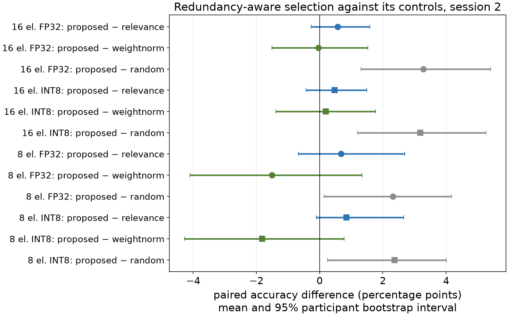
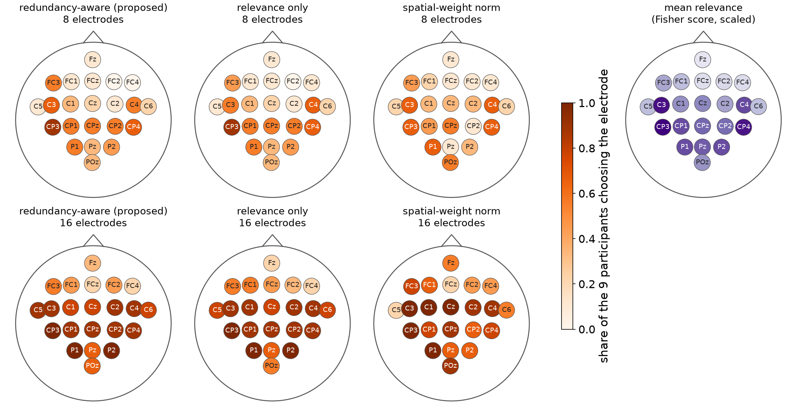

EEG Channel Selection and Model Compression for Motor-Imagery BCI
How many electrodes, and how many bits, can a decoder lose on a new recording day?
Peiye Li
Every electrode costs twice
Sensing
Hardware on the head
Each electrode needs a contact, an amplifier channel and setup time. Removing one changes the device itself.
Compute
Work in the decoder
EEGNet’s first layer runs over every electrode, so its multiply-accumulates and activation memory grow with the electrode count.
Electrodes are physical measurement sites; CNN feature channels are learned. Pruning the model never removes an electrode.
Peiye Li · COMP 690 · 2
Research question
At a fixed electrode count, does accounting for redundancy between electrodes beat relevance-only and weight-based selection on a new recording day, and does any advantage survive INT8?
Hypothesis: a task-aware subset beats a random one, but correlated electrodes are not necessarily dispensable. No gain in accuracy or speed is assumed.
Peiye Li · COMP 690 · 3
Data, and a test day kept locked
9 people
BCI Competition IV, dataset 2a
2 days
6 runs of 48 cued trials each day
22 electrodes
EEG at 250 Hz, 2-s window after each cue
4 classes
left hand, right hand, feet, tongue
Protocol
1 · Validate on day 1
three folds, two runs held out each
2 · Decide on validation only
epoch budget, pruning base, final choice
3 · Freeze the analysis plan
written before day 2 is read
4 · Retrain on all of day 1
three seeds per condition
5 · Score day 2 once
FP32 and INT8, artifact-free trials
Peiye Li · COMP 690 · 4
Where EEGNet’s cost lives
2,420
parameters: about 9.4 KB in FP32
5.9 M
MACs per decision; 96% in the first temporal convolution
397 KB
peak activations, FP32, run layer by layer
Compute and activation memory scale with the electrode count; parameters barely do.
At 8 electrodes: 2.2 M MACs (−63%), 160 KB of modeled peak activations (−60%), but still 2,196 parameters (−9%).
Peiye Li · COMP 690 · 5 · analytical counts for one 2-s window, batch 1
Choosing the electrodes
next = argmax relevance(c) − 0.5 × mean |ρ(c, chosen)|
Proposed rule
Relevance: Fisher score of mu (8–13 Hz) and beta (13–30 Hz) log power, scaled 0–1
Redundancy: |Spearman ρ| of that log power across trials
Training trials only; keep 16 or 8 of 22
Controls, same count
Relevance only (penalty 0)
Spatial-weight norm of the trained 22-electrode EEGNet
Three fixed random subsets
All 22 electrodes as the reference
Peiye Li · COMP 690 · 6 · each subset retrains EEGNet, so the input really shrinks
Compressing the decoder
Fewer bits
INT8 quantization
ONNX Runtime static post-training quantization
8-bit activations, per-channel 8-bit weights
Calibrated on the model’s own training trials
Fewer filters
Structured pruning
Drop 25% or 50% of the 16 final pointwise filters by L1 norm
Slice BatchNorm and dense inputs: 2,420 → 2,108 or 1,796 parameters
Fine-tune 100 epochs
Timing: ONNX Runtime on an Apple M4 CPU, batch 1, one thread, 100 warm-up and 1,000 timed calls.
Peiye Li · COMP 690 · 7
16 chosen electrodes match all 22; 8 cost 3–5 points
The redundancy term beat random, not simpler rules
vs relevance only
+0.6 / +0.7 points
same subsets for 6 and 7 of 9 people
vs spatial-weight norm
−0.0 / −1.5 points
weights did better for 7 of 9 at 8 electrodes
vs random subsets
+3.3 / +2.3 points
better for 8 of 9 people

Peiye Li · COMP 690 · 9 · values are 16 / 8 electrodes, FP32; INT8 within 0.3 points of each
Why the penalty changed so little
0.74
mean |ρ| between two electrodes’ band power (0.66–0.84 by person)
0.13
spread of the penalty across candidates, against relevance gaps of 0.1–0.3
6–7 of 9
people got identical subsets from both rules
Power rises and falls across the whole scalp from trial to trial, so every candidate looks equally redundant.
The weight-based rule asks the trained network which inputs it uses, which may be why it held up best at 8 electrodes.
Peiye Li · COMP 690 · 10 · penalty measured at the 8th pick, final fit on all of day 1
Every rule favours C3, C4, CP3 and CP4

Subset overlap
0.74–0.85
band-power rules, across folds
0.40–0.66
weight-based rule, yet it decoded as well
Peiye Li · COMP 690 · 11 · maps from the final fit; overlap = mean pairwise Jaccard index
INT8 kept the accuracy but ran slower on this CPU
≤ 0.5 points
accuracy change in all 17 conditions
2.9× fewer
parameter bytes (9,576 → 3,260)
28% slower
0.358 vs 0.280 ms, 22 electrodes
The temporal convolution got 38% faster in INT8, but the grouped spatial convolution ran 14× slower (185 vs 12.8 µs): the quantized spatial operator dominated this profile.
Peiye Li · COMP 690 · 12 · ONNX Runtime 1.31.1 on an Apple M4 CPU; per-node times from its profiler
Electrode count sets compute, memory and latency
Model
Param. bytes FP32 / INT8
MACs
Modeled activations FP32 / INT8
Latency FP32 / INT8
22 electrodes
9,576 / 3,260
5.89 M
397 / 99 KB
0.280 / 0.358 ms
16 electrodes
9,192 / 3,164
4.30 M
289 / 72 KB
0.206 / 0.259 ms
8 electrodes
8,680 / 3,036
2.18 M
160 / 40 KB
0.115 / 0.148 ms
16, 50% pruned (final)
6,728 / 2,420
4.28 M
289 / 72 KB
0.201 / 0.257 ms
Pruning half of the final filters removed 27% of the parameters but only 0.4% of the MACs, and left latency unchanged. Preprocessing takes 0.04–0.09 ms. Activation bytes are modeled, not measured ORT memory.
Peiye Li · COMP 690 · 13 · Apple M4 CPU, batch 1, one thread, 1,000 timed calls; 95th percentile within 0.012 ms of the median
The frozen choice had similar mean accuracy on day 2
16 electrodes by relevance · half of the final filters pruned · INT8, chosen on day-1 validation before day 2 was scored
65.0%
day-2 accuracy; all 22 in FP32: 65.0%
4.0×
fewer parameter bytes (2,420 vs 9,576)
5.5×
smaller modeled tensor peak (72 vs 397 KB)
4 of 9
people lost more than 2 points; one gained 7.3
Validation had predicted 64.9%. Across people, accuracy ranged from 45.6% to 83.0%, far wider than any gap between conditions.
Peiye Li · COMP 690 · 14 · mean difference vs all 22 FP32: −0.0 points (95% interval −2.2 to 2.4)
Supplementary M5 reproduction · added after original test results
Equal fine-tuning reveals a cost of 50% pruning
Both original bases, all 9 participants and 3 seeds; every branch gets 100 extra epochs at 1e-4.
−1.56 points
16-electrode INT8, 50% pruned versus unpruned with the same extra training.
95% exploratory interval: −2.86 to −0.42 points.
216 models evaluated in FP32 and INT8. The historical M4 finalist is retained.
Peiye Li · COMP 690 · supplementary, post-test comparison · M5 independent reproduction, not original-weight recovery
Real-time replay through the frozen decoder
6 of 8
trials correct, participant 3, day 2
0.35 ms
compute per decision, INT8
Streamed windows equal the offline ones to 10⁻⁶ µV.
Replay only: the participant never saw this feedback.
Peiye Li · COMP 690 · 16 · click the frame to play the 62-s replay · participant 3 is one of the stronger decoders (83%)
What these results do not show
Nine people, one dataset
Wide intervals; no claim for new users, headsets or implants.
Desktop timing
Not microcontroller latency, SRAM or energy.
Original pruning confound
Original pruned models got 100 extra epochs; the added M5 control matches this budget.
Per-person electrodes
A headset would need one fixed set for everyone.
One redundancy measure
Band-power correlation only; others may differ.
Offline replay
No closed-loop or asynchronous use was tested.
Peiye Li · COMP 690 · 17
Next steps
Done: every proposed experiment (plan frozen before day 2) and the M5 matched-budget control
Required
Finish the report and slides
Revise after this review
Keep the frozen-plan results as the main claims
Flag later analyses as post-test
Late November to early December
Follow-up A · first
Why was INT8 slower on the M4?
Leave only the grouped spatial convolution in FP32
Is the mix faster than FP32?
Time FP32, INT8 and the mix on the M5, apart from M4
No retraining needed
Follow-up B · if time
Redundancy without shared activity
First remove the band-power swing shared by all electrodes
Retest at 8 electrodes, still 3–5 points below all 22
Choose on day 1; confirm on a second two-day dataset
Needs new training runs
Peiye Li · COMP 690 · 18 · plans only, nothing on this slide has been run · both follow-ups come after the frozen plan
Takeaways
1
Which electrodes, and how many, matter more than how the weights are stored.
2
Sixteen task-chosen electrodes kept similar mean accuracy; redundancy showed no clear gain over relevance.
3
INT8 shrinks bytes, not M4 time; matched fine-tuning reveals a pruning accuracy cost.